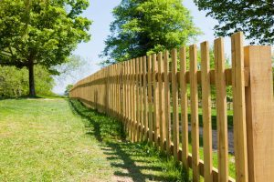
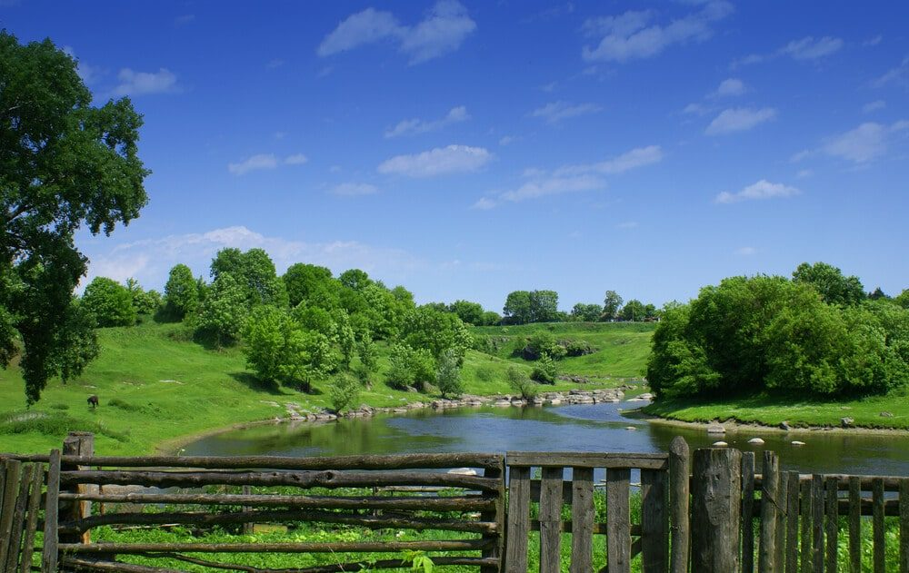

In This Guide
- Length, height, wood type, style, and site conditions decide what a wood fence costs, and each one can move the total a long way.
- The dollar figures here are rough 2021 ranges. Prices change, so treat them as ballpark numbers and not as a quote.
- Pressure-treated pine, cedar, cypress, and redwood sit at different price levels and hold up differently in Louisiana humidity.
- A written estimate that lists materials, gates, and removal of any old fence is the only reliable way to get a current price.
A wood fence marks a property line, adds privacy, and keeps pets and kids where they belong. It also raises the first question every homeowner asks: what will it cost? This guide was first written in 2021, so the dollar figures in it are rough ranges from that year and not a current quote.
Lumber prices, labor rates, and material supply have all shifted since then. What stays useful is how the price gets built. The team at Big Easy Fence walks homeowners through the same pieces every time, and this article follows that order, starting with what goes into a wood fence and ending with how to get a number you can trust.
What Goes Into the Price of a Wood Fence
Two fences of the same length can land far apart on price. These are the pieces that move the number most.
Length and Height
Every extra foot of fence adds posts, boards, rails, and labor. Height matters just as much. A six-foot privacy fence uses far more lumber than a three-foot picket fence, and it needs sturdier posts to stand up to wind.
Type of Wood
Pressure-treated pine usually costs less. Cedar and cypress cost more, but both resist rot and insects naturally. Redwood is often shipped in from far away, which is part of why it sits at the top of the price range.
Style and Extras
A plain picket fence costs less than a shadowbox or a lattice-top design. Post caps, decorative tops, arches, and gates each add material and labor, so the extras can add up faster than you expect.
Site Conditions and Labor
Slopes, tree roots, hard soil, tight access, and removing an old fence all change how long a crew needs on site. Labor is a real share of the total, which is why the cheapest lumber does not always make the cheapest fence.
Rough Numbers From 2021
National estimates published around 2021 put a finished wood fence at roughly $17 to $45 per linear foot. Materials made up about $7 to $15 of that per foot, and labor about $10 to $30. The same sources put many whole-yard projects somewhere in the low thousands of dollars.
Those figures show the general shape of the market. They say very little about your yard, your wood choice, or what lumber costs today.
Prices change with the lumber market, labor, and location, and a New Orleans project can price differently from a national average. The only dependable number is a written estimate based on your actual property.
Why Homeowners Choose Wood
Compared with other fence types such as vinyl or metal, wood earns its popularity for a handful of practical reasons.
A Cost That Fits Many Budgets
Wood is often one of the lower up-front costs among fence materials. The trade-off is upkeep: a wood fence needs sealing or staining every few years, and it rewards owners who stay on top of it. Our guide on preventing rot in wooden fences covers that routine.
A Natural Look
Wood blends in. Near trees, gardens, or open green space, a wood fence looks like it belongs there while still giving you privacy and a clear property line.

Easy to Customize
You can keep a wood fence plain and sturdy or make it decorative. Lattice tops, cap boards, arched or dipped sections, and different post heights are all possible. Wood also takes a new stain or paint. When you tire of the color, you sand it, restain it, and start over, which vinyl cannot do.
A Friendlier Choice for the Environment
Wood can come from reclaimed sources, such as leftover building materials or old lumber that would otherwise be thrown away. Vinyl is harder to recycle, so a reclaimed-wood fence can be the greener option.

Built to Last With Care
Wood species differ a great deal in how long they last, so the choice matters. A fence that lasts longer costs less per year, and a well-chosen wood pays you back. Our post on saving money when buying a fence explains how to weigh price against lifespan.
Picking a Wood for Louisiana Weather
Heavy rain, humidity, summer heat, and termites all work against a wood fence in this part of the country. Each common wood handles that mix a little differently.
| Wood | What It Offers | Typical Price Level |
|---|---|---|
| Pressure-Treated Pine | Preservative treatment helps it resist rot and insects | Lower to moderate |
| Cedar | Natural oils resist moisture, decay, and insects, and it is slow to warp | Moderate to higher |
| Cypress | Naturally resists rot and insects, and it is a familiar Gulf South wood | Moderate to higher |
| Redwood | Resists pests and rot, and it is often shipped from far away | Higher |
Price levels shift from one supplier and season to the next, so read this table as a rough ranking and not a price list. Whatever the wood, a protective finish and good drainage around the posts do as much for its lifespan as the species does.
How to Get a Number You Can Trust
A national average cannot see your slope, your gate count, or your old fence still standing along the back line. Here is a simple way to get a price that fits your yard.
- Measure the fence line. A rough sketch with lengths for each side is enough to start the conversation.
- Decide on height and style. Privacy boards, pickets, and shadowbox designs price differently, so settle on the look first.
- Choose a wood. Ask which species holds up best for your yard, then compare that with your budget.
- Get the estimate in writing. It should list the materials, the number of gates, removal and haul-away of any old fence, and who handles permits or homeowners association approval.
- Compare line by line. If you collect more than one estimate, check that each one covers the same materials and the same scope before you compare totals.
Making Sense of the Numbers
Wood remains a practical, good-looking choice for many homes, and its price depends on choices you control: how much fence, how tall, which wood, and how plain or decorative. The 2021 ranges in this post are a starting point for thinking, and current pricing needs a current estimate. When you are ready to put real numbers on your project, get in touch with Big Easy Fence for a free estimate.
Want a Real Number for Your Yard?
Tell us how much fence you need and what you want it to do. We will measure, talk through wood options, and put the price in writing.